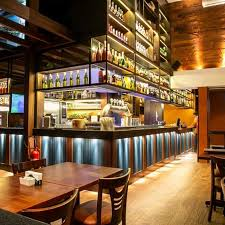

O que eu mais gosto em Sao Paulo
Passear na Avenida Paulista!
Um dos principais centros financeiros da cidade, a avenida Paulista tambem possui diversas opcoes de entretenimento, Endereco do Museu de Arte de Sao Paulo, MASP, do Teatro Gazeta e muitos outros, a regiao eh de facil acesso gracas as diversas linhas de onibus que cruzam a avenida e a linha de metro que passa por baixo dela.
A Avenida Paulista sempre eh assunto. O que sera que estao falando a respeito no Twitter?
Os bares da Vila Madalena
Depois de um dia de trabalho, nada melhor do que um bom chopp, um petisco e uma conversa em uma mesa de bar. Opcoes de sobra na regiao das ruas Aspicuelta, Fradique Coutinho e Wisard.
Veja quais os melhores bares e restaurantes da regiao no Guia da VEJA Sao Paulo.
O Parque Ibirapuera
Um dos cartoes postais da cidade, o parque dispoe de mais de 1,5 km(2) de area verde, lagos artificiais e pistas de cooper e ciclismo. E se isso nao fosse o suficiente, o parque costuma ser palco de diversos eventos culturais ao longo do ano.
Veja no mapa como chegar ao parque.